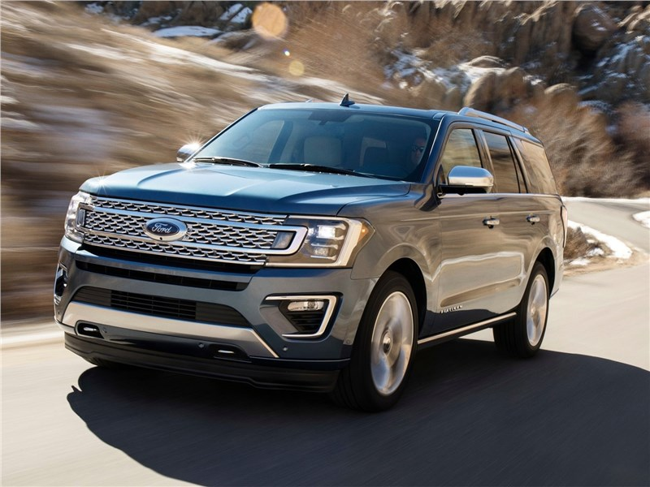
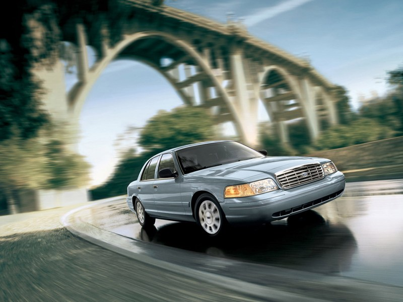
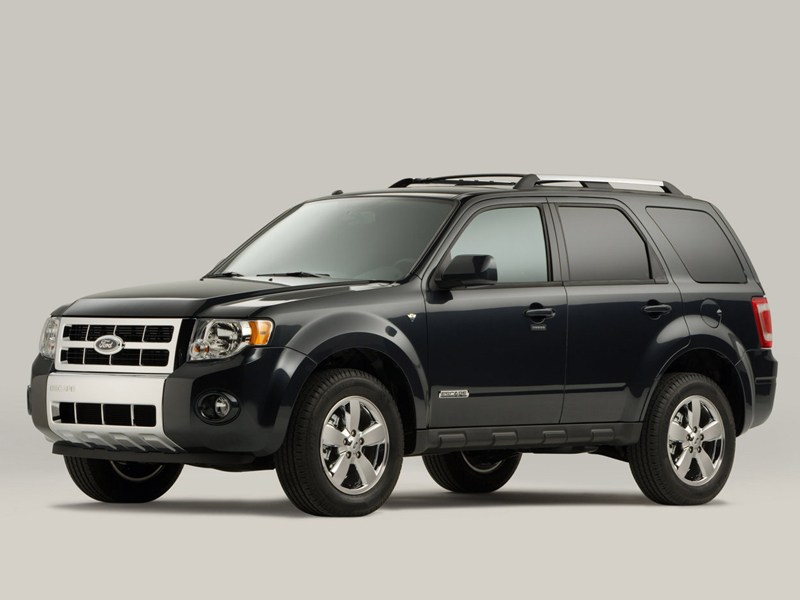
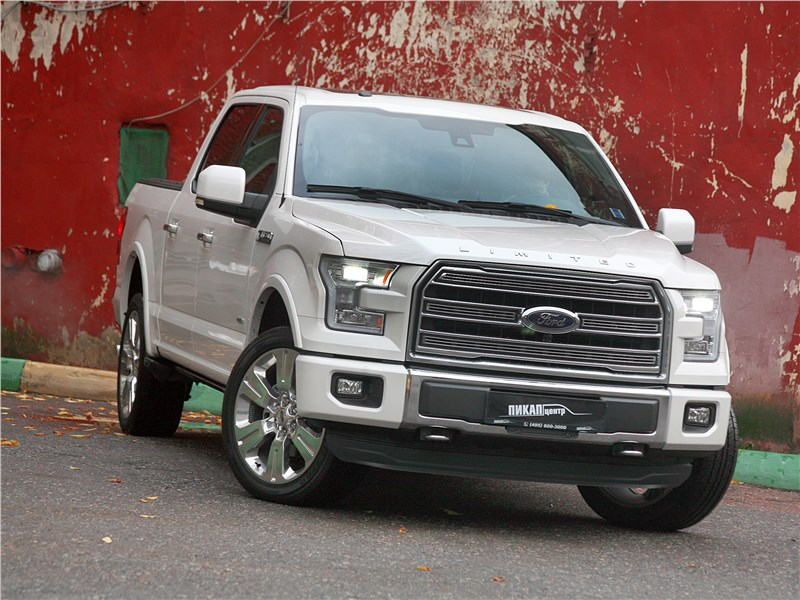

О Ford
Ford – знаменитая американская автомобильная компания, которая производит легковые автомобили таких марок как Mercury, Ford и Lincoln. Штаб-квартира находится в штате Мичиган, городке Дирборн. Своим основанием компания обязана Генри Форду, который
открыл в 1903 году небольшую фирму и начал изготавливать дешевые автомобили Ford. Генри хотел существенно снизить затраты на производство авто, тем самым сделав свои модели максимально дешевыми. И это ему удалось: автомобили Ford действительно
доступны. В 1913 году компания первой ввела метод стандартизации взаимозаменяемых частей изделий и при производстве автомобилей использовала конвейерную технологию. Этот шаг позволил поднять производительность труда всего за год на 40–60%. В 30
годах автомобили Ford стали самыми популярными в США, затем в Великобритании и других странах Европы. На сегодняшний день компания имеет собственные сборочные и производственные центры в 30 странах мира. Модельный ряд Ford включает городские
компактные авто, семейные вэны, полноприводные кроссоверы, а также коммерческие автомобили Ford – модели для корпоративного использования, грузовые и пассажирские. По техническим характеристикам и безопасности Ford все модели отвечают самым строгим
требованиям рынка. В 2002 году Ford открыл во Всеволожске (под Санкт-Петербургом) производство Ford Focus. Сегодня это единственный в мире завод, выпускающий все модели Fordus с различными типами кузова.

Собственники и руководство
Компания Ford Motor уже на протяжении более чем 100 лет контролируется семьёй Фордов, являясь, таким образом, одной из наиболее крупных компаний, находящихся под семейным контролем, в мире. В то же время, Ford Motor Company является публичной
компанией, акции которой котируются на Нью-Йоркской фондовой бирже. Семье Форд на октябрь 2010 года принадлежало 40 % голосующих акций Ford, остальные находились в свободном обращении. Председатель совета директоров — Уильям Форд мл. (William
Clay Ford, Jr). Президент — Марк Филдс.
Дейтяльность
Компания выпускает широкий спектр легковых и коммерческих автомобилей под марками «Форд». Компания разделена на три структуры по географическому признаку: Ford North America, Ford Asia Pacific и Ford of Europe. Ранее каждое из этих подразделений
имело собственный модельный ряд, но в 2006 году руководитель компании Малалли объявил о новой стратегии «Единый Ford», согласно которой Ford должен постепенно начать выпускать глобальные автомобили, общие для всех рынков, и первым из них стал
Ford Focus III. Предприятия Ford (на 2010 год — всего 80) расположены в США, РФ, Канаде, Мексике, Бразилии, Аргентине, Испании, Китае и прочих странах.
